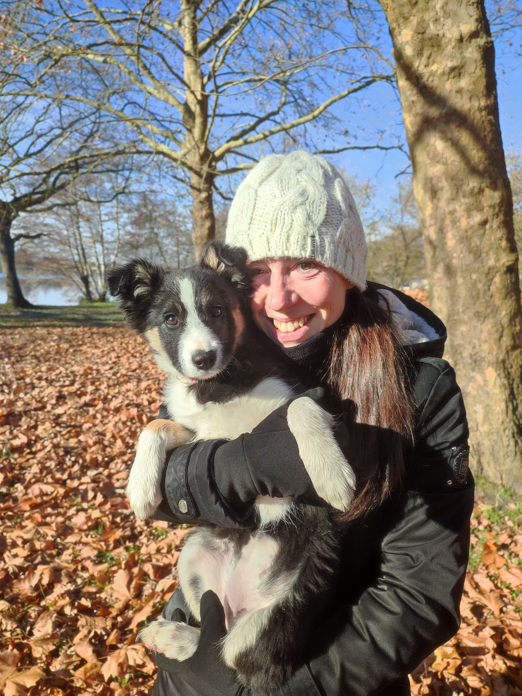

L'éducation commence par la compréhension.
Vous accompagner vers une relation équilibrée avec votre chien.
Éducation bienveillante, gestion des comportements, visites à domicile pour des vacances sereines, balades canines adaptées au rythme de votre chien lors de vos absences. Un accompagnement sur-mesure et respectueux de votre animal.

Ce que nous proposons
Un accompagnement personnalisé
Pourquoi Cani'Focus
Construire ou reconstruire une relation stable et équilibrée avec votre chien
Éducation bienveillante
Un apprentissage fondé sur la confiance et la motivation, valoriser les bons comportements pour des progrès durables.
Professionnalisme
Éducatrice canine diplômée d'État, évolution permanente des compétences à travers des formations complémentaires, pour vous accompagner toujours mieux.
Suivi personnalisé
À vos côtés pour vous guider dans votre progression, suivi attentif tout au long de vos séances.
Avis clients
Bientôt, leurs témoignages
Cet espace est réservé aux retours des familles accompagnées. Les premiers avis y seront publiés prochainement.
Une question ?
Nous sommes disponibles pour répondre à vos questions, échanger sur vos attentes et vos besoins concernant votre compagnon à quatre pattes.